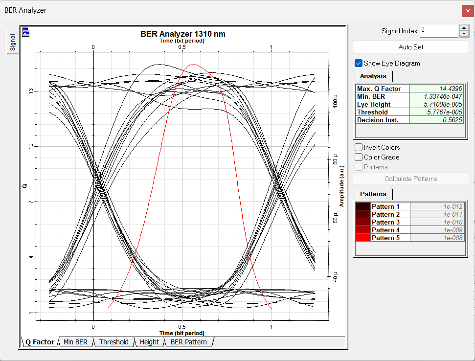
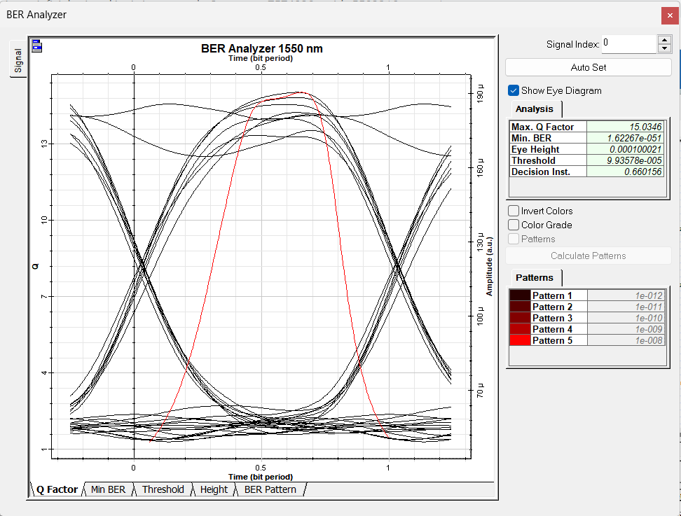
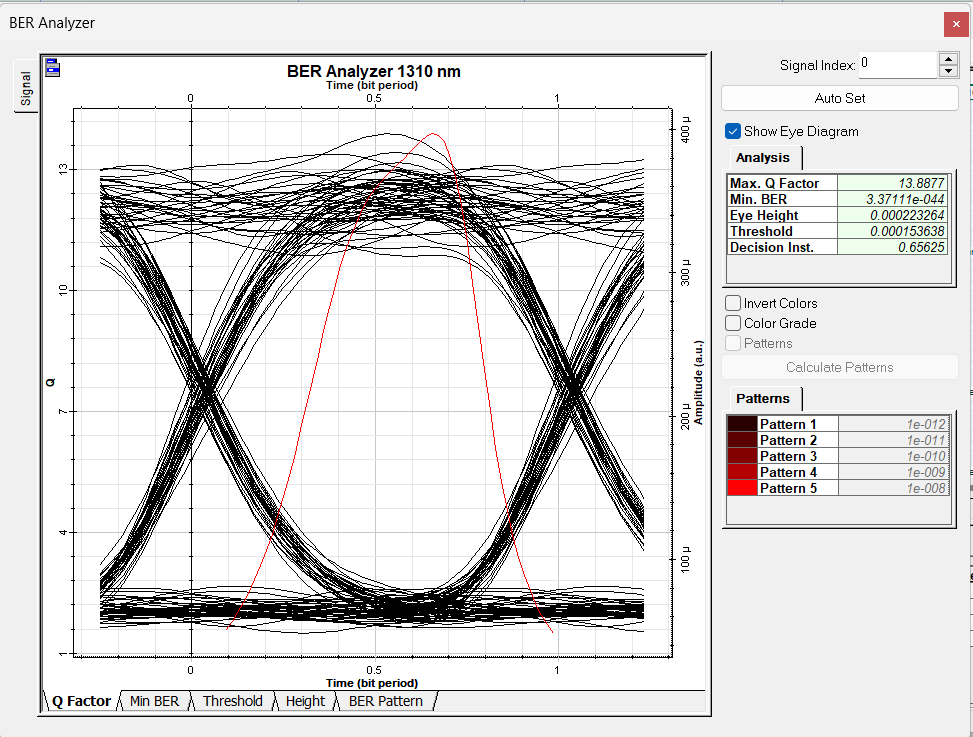
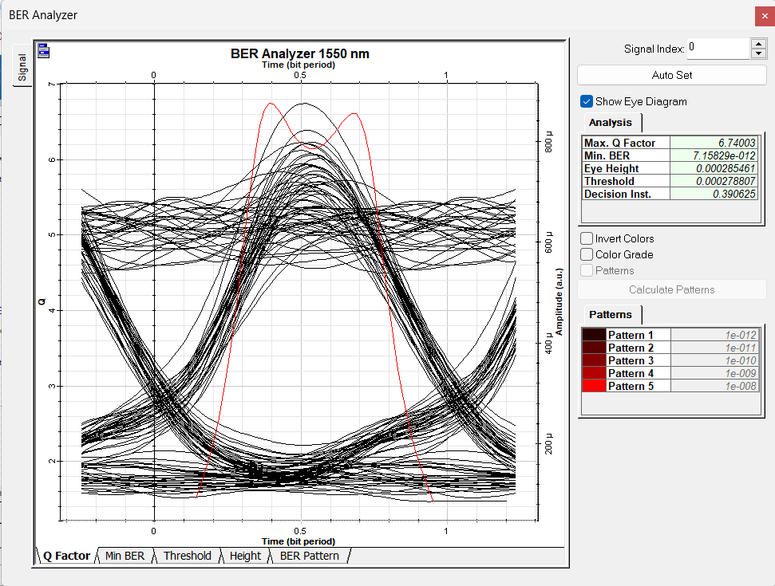

← Volver a 3º de Grado
COPT · 2022–2023 · Simulación óptica
Evaluación de un enlace WWDM mediante diagramas de ojo
Práctica de simulación con OptiPerformer centrada en comparar la calidad de transmisión a 1310 y 1550 nm bajo distintas velocidades binarias, manteniendo fija la potencia láser y la longitud del enlace.
COPTWDMEye diagrams
Criterio de selección
Los archivos de escenario .osp y el guion proceden de la asignatura y no se publican como trabajo propio. La ficha conserva exclusivamente la entrega con los resultados generados durante la simulación.
Experimento
Misma red, cuatro observaciones.
20 kmlongitud de fibra usada en las capturas seleccionadas
3 dBmpotencia del transmisor fijada para la comparación
2 λcanales ópticos analizados a 1310 nm y 1550 nm
2 bitratescomparación entre 2,5 y 10 Gbit/s
Evidencias
Diagramas de ojo obtenidos.




Conceptos
Lectura del enlace óptico
OptiPerformerWDMFibra monomodoDispersiónAtenuaciónBERQ factorEye diagram
Entregable seleccionado